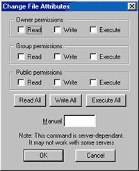

Web Site Replicator v1.0
Created by Lv 'Zetalog' Zheng of eZyScripts.Com
FTP Tutorial - Changing File Attributes
In order to install any CGI script on to your web server, you must know how to CHMOD a file or directory.
When your installing a CGI script, the installation instructions will always ask you to CHMOD a file, or change
the permissions of a file.
To do this, select the file or directory on your web server you would like to CHMOD. Next, either press Ctrl+A, or go to
the menu Commands->Advanced Commands->Change File Attributes. This will bring up a dialog box which looks like
this:

The installation instructions for the script should have told you what to change the permissions to, like 755 or 777, ect..
All you do is type that three digit number into the box that says "Manual", then click on the OK button.
< Prev |
Next >